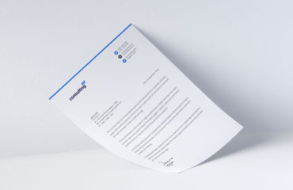

Masonry Grid  Business Planning, Strategy & Execution Financial Services Volker Stevin Construction Advanced Analytics Beff Baffer Construction Financial Services Focus on core delivers growth for retailer Surface Transport & Logistics slide in up Business Planning, Strategy & Execution Financial Services Volker Stevin Construction Advanced Analytics Beff Baffer Construction Financial Services Focus on core delivers growth for retailer Surface Transport & Logistics slide in right Business Planning, Strategy & Execution Financial Services Volker Stevin Construction Advanced Analytics Beff Baffer Construction Financial Services Focus on core delivers growth for retailer Surface Transport & Logistics overlay bordered Business Planning, Strategy & Execution Financial Services Volker Stevin Construction Advanced Analytics Beff Baffer Construction Financial Services Focus on core delivers growth for retailer Surface Transport & Logistics Business Planning, Strategy & Execution Financial Services Volker Stevin Construction Advanced Analytics Beff Baffer Construction Financial Services Focus on core delivers growth for retailer Surface Transport & Logistics